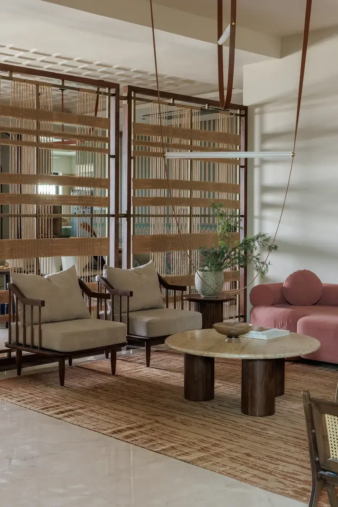

In the press
Press
Features and coverage of the studio’s work. Each piece links straight through to the publication.

Val Atelier
Step away from the city for a moment and just breathe.Featured in Architectural Digest India
For editors
Need images or a quote?
High resolution photography, project fact sheets and studio credits are available on request. Write to the studio and we will send them across.